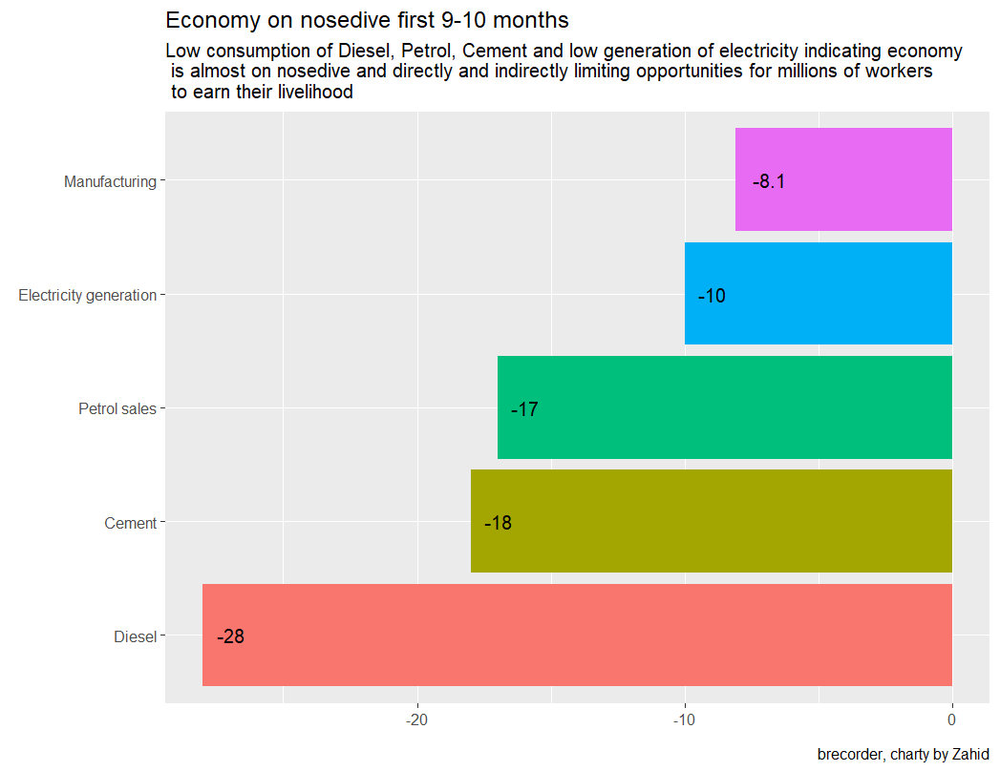

Current economic challenges and way forward
Zahid Asghar
Quaid-i-Azam University, Islamabad
What is wrong
- Pakistan economy crashes every once in a while: feature by design
- Very low investment rate
- Fiscal problem: For every USD govt raises in revenue, it has to spend 2.7 USD Income 1000 USD, spending 2700 USD
- Sins: Income and pensions
- If no borrowing, country to shut down
- Balance of Payment: X=1000, M=2750 USD
- Liquidity Problem: Short maturity term on average 1 to 2 years
- Loss of sovereignty due to economic situation international and financial

Why Export Matters
global competitiveness
Capacity to innovate and compete with the rest of the world
1992: Indian export increased 13 times while Pak only doubles
Vietnam : 15 B USD in 2001 and 220 B USD in 2018
Export per capital India increased by 6.8 times while BD by 6.2 as compared to Pakistan
- Uncompetitiveness as compared to neighboring countries
Export : dynamism, technology absorption and adaptation, building reputation, brand names
Sports, textile, surgical: no branding
No MNCs developed
Reasons: Mangerial skills, organizational skills
GDP calculation in process
From swiming…
Large trade deficits and even surplus does not mean something good. Pakistan has gone through this boom and bust cycles many times before: an import-driven boom, balance of payments crisis, International Monetary Fund (IMF) bailout, stabilisation, a period of growth and then back to a crisis. This time is no different.
Productivity
Aggregate productivity stagnant or declining : Farms/firms becoming less productive over time - Productivity decline in firms specially in family-owned - Yield has grown but due to intensive use of inputs - Allocative efficiency gains : 18 % due to better resource allocation and 12% from entry of new firms
On the export side: productivity premium Duty Drawback of Taxes: Little impact overall and a high cost/benefit ration Reallocation twoards products that were eligible for high subsidy rate, and happened to be well established and low sophistication products
On the import side: high duties negatively affected firms’ productivity as well as sales and wages Import duties from 15% in FY10 to 21.3% in FY20 implying higher cost of importing intermediaries and capital equipment
Producitivity is key in all economic sectors from the point of view of employment, poverty reduction and export orientation : agriculture
Economic Challenges
Decades long struggle with macroeconomic stabilization arising from unsustainable fiscal policies
Low Economic Growth, Compounding
Heightened expectations of the population for a better life from democratic government
Legacy of economic distortions
Low and declining economic productivity
Large loss-making public sector that impedes market development
Macroeconomic Challenges
Unemployment
Inflation
Low Economic Growth
Stagnant Export
NFC : Devolution is good with responsibility but NFC More resources to provinces but w/o liability of raising revenue
Economic History
- China, India, Pakistan, Bangladesh, Indonesia, Malaysia
- 1960 : Pakistan Better than others (23-24% rich in terms of GDP/capita)
- Lags Behind in
- 1970s: 18%
- 1980s : 7%
- 1990s: 34 %
- 2000s: 20%

stagnancy
Flawed Economic Discourse
Pipedreams: SEZs, Roads, Corridors, Gas pipelines
Stuck: hardcore paradigm of development
Reality: Software is primary requirement
SOFTWARE
Rule of Law (Contracts are honored)
Property Rights (China’s economic growth after PR Changed)
Allocation of Talent (Meritocracy)
Organisational and managerial capacity
Knowledge acquisition
All this : Cant be bought, domestic capacity and domestic reforms One has to built all this as it can not be imported
Keynes: A madman who knows the world is a slave of defunct economist
Stuck in MH paradigm
Why economic growth matters
Hayek
- Freedom
- Individual rights
- Knowledge acquisition
- How people can collaborate (Networking)
- Transactions
- Idea sharing
- Knowledge generation
Lucas (1988) Once you start thinking of growth of nations, everything else loses interest,this is the most important questions
Amrtya Sen :Dev as Freedom , Capabilities
- Freedom to think , choices, more productive
All this needs creative cities
How can start this journey: Hard choice, long term phenomenon
Economic Corridor : F-16 Protocol (China, Saudia …)
Government needs similar commitment to software, freedom, tolerance, diversity…
Intolerance, hate, lack of property rights, social justice, inequality
(Social Goods)
– - Subsidies - SROs - Protection Cement, Textile, Fertilizers, Cars…. (all domestic consumption, no export) - Profits of rent-seekers are secured - No need for innovation, and growth is happening only due to increase in population
Short-termism: MYOPIC APPROACH
- Successive governments suffering from myopia
- Occasional consumption booms from borrowing and remittances (2002-05), 2016-18
- Increased informal economy weakening state control and governace besides erosion of tax-base
- Pakistan remained married to begging bowl
- Sought FDI without terms
- Pipenomics : Someone build for us
- Poor aid governance led to poor aid practices > This distracts one not to think hard
Extractive economic institutions
- Lack of law and order
- Insecure property rights
- Entry barriers and regulation that prevented functioning of markets and created a un-leveled playing field
- System designed by and for the benefit of the elite
Inclusive economic institutions
- Secure property rights
- Law and order
- Markets and state support (public services and regulations) for markets
- Free entry of new businesses
- Contract enforcement
- Access to education and opportunity for the great majority of citizens
Why Nations Fail: Daren Acemoglu and James A. Robinson
What to do ?
Pakistan’s economic and export problems are deep and structural
Focusing on fixing twin deficit (CAD & FD) is misplaced. Addressing symptoms will not cure the disease
Build up domestic capacity to innovate, to organize and to manage - An Economist Job: not to tell what to do and what not
But tell cost of doing business as usual vs develop your software and progress
Talent will not stay
Production over Commerce
Our full focus on meeting dollar demand is misplaced
Social contract goods
Cities have key role in provision of social contract goods
Most of economic thinking: “How can living-standards be improved for most of humanity”
Answers vary while Question remain same
Eternal struggle for mankind Preachers, utopians philosophers and many others: Everyone defends one’s utopia that people lot can be improved if follow their description
Dev. Community: prey to descriptive approach
Experts: pretend to have solutions
We are all told : Implement, Implement …
Monitoring mechanisms: MDGs, SDGs
70 years of experts dev.policy, aid funding and many consultant, plan…
Development has eluded a large number of countries : Why is that? ##
Donors and Experts : Easy answers
Prescriptions are not implemented
Lack of political will : If success, they celebrate otherwise blame
Best practices
How can same policies for all countries
Practices well known ,govt implementing agency
Approach : Top-down (All solutions from foreign experts) Land-cruisers, consultants … results are the same
What is wrong with this model/approach
Ideological models and experts assume: Society and development: Eng phenomenon
Plan properly and then everyone will live according to the plan and good things will happen
Eng: Inert materials
Social problems: self-willed, individualistic human beings
People: ambitions, plans &desires individually and collectively People don’t change because consultant want
Most serious economists moved away from this approach
Economy: set of ind and groups decisions
Bottom-up
- Economy: Productivity, products, activity, trade and exchange, transaction among many others
- Even well motivated plans to send children to schools failed
- Parents decisions more complex than donors assume
- Development not uniform across the countries
Local issues, cultures & community, social and human capital plays a critical role
Planners try their best even out these difficult often at huge cost with very little success
Revenue Targets missed: More taxes 64 WHT
Is starving PSEs and Universities of working capital something to cheer?
Complexities of the 21st Century
Energy: Lack of professional regularity capacity
Rent seeking commitments to IPPs
Losses due to structural and poor governance problems
Circular debt chokes up the system
Getting the basics right
- Economy is not rocket science
- Qs” What are the basics?
- Basics: high revenue, high export, high growth, low dollar rupee ER etc with low inflation
- WOW: Simple and easy : Economy is not rocket science
- Wishing all good things is economics and economist is supposed to help governments to do all these good things with magic stick
- 5-Year plans for all Basics
- Securing property rights
- Strengthening contracting
- Reducing transaction costs
- Reducing and reforming markets for efficiency
- Removing incentives for rent seeking and putting incentives for entrepreneurship
- For Example : W/o good governance: no wish list will happen as plan after plan failed due to poor governance
“All of us have to come out of our comfort zone and encourage discussion and debate”
Hayek, Change and Complexity
It is, perhaps, worth stressing that economic problems arsie always and only in consequences of change. The Use of Knowledge in Society
Get the growth model
- Export led policies help China, SK and others
- Special Economic Zones
- Digitization (Inequality)
- Reverse Myopia Build the capacity to play long game where decisions 20 years from now -> Long game: who we are as a nation? -> Where we want to go?
Boosting Domestic Productivity
-> Boosting domestic productivity which means raising the capacities and capabilities of your people -> Our focus : Ask US to do this, ask China for Gawadar/CPEC -> Not focusing on building domestic institutions, improving domestic capacity -> Why don’t governments focus - One needs hard work, local thinking, building teams, build institutions - Hire right competent people - no to nepotism -> Easy not to do any of that
Learning how to catch a fish…
-> Broad conceptual parameters - Education, Health investment for better inputs - Boosting domestic productivity - Agriculture
WB reports that South Asia will grow at 3.4 % over the three year period. India will grow at 8.4 % while Pakistan at 3.4 %. Pakistan is lagging behind and clubbed together with Afghanistan where 30-35% people are not ready for vaccination. Bangladesh achieved a lot by boosting its export and even Bhutan did well by attracting tourism. We had long fiscal challenges and even cant affort now to put more burden on people by increasing energy prices. > Two immediate recommendations: - Reduction in current account deficit - expansion in exports
CAD cause for concern
Major components of current account deficit
- Trade
- Remittances and
- financial accounts Unsustainable CAD has been the main reason for Pakistan’s 23rd entry into the IMF program.
- fuel and edible oil cost 1/3rd of total import bill
.pink[Economic theory dictates that if a CAD is being financed by borrowing, with associated costs, it will become unsustainable and today the rise in domestic and foreign debt has crossed all previous records. In addition, loss of currency from Rs.152 to Rs.187 rupees to the dollar would raise the risk of capital flight as there will be loss of faith in the value of currency by both foreign and residents.]
Sustained Flawed Policies
- Zardari : Costly energy deals beneficials to sellers
- Nawaz Sharif: Power generation plants on same TORs as Zardari
- Imran Khan : Failure to import RLNG on time All this led to unsustainable circular debt. Rs. 1.2 trillion before this government and 1.2 Rs is further accumulated totalling to 2.4 trillion Rs.
- Little room to play : Debt, Defence, Pension, Government Expenditure, with PM focus for more resources to Kamyab Jawan and Ehsas program.
- Government fulfills its commitment of shifting the burden to consumers but never fulfils its commitment of deep structural reforms
- The sustained flawed policies over decades of postponing the hour of reckoning have not only made the donors reluctant to accept pledges for meaningful non-reversible reforms, a situation exacerbated by lack of US support on their boards, but also due to the presentation of half-truths to the executive which prevents meaningful reforms.
IMF and Pakistan
22 programs -23rd Shaukat Tarin : different from his 2008 expectations due to low engagement of Pakistan with US
- Implementation of harsh conditions:
- In almost all 22 IMF programs, govts never made any progress in any challenging reform(s) and all govts shifted the onus of achieving full cost of recovery on to the consumers by raising tariff.
- Circular debt 1.2 trillion in 2018 to 2.2 trillion rupees today (Nov.2021)
- Focus on raising revenue
- Given current scenario, only indirect taxes leading to more burden on poor than rich. Instead of slashing expenditure, Tarin increased current expenditure significantly.
- 28.5 billion dollar funding is a condition of 39 month ongoing programing or in other words roll-over of loans by
friendlycountries mainly China and Saudi Arabia till Sep-2022.
- 28.5 billion dollar funding is a condition of 39 month ongoing programing or in other words roll-over of loans by
World Bank Report on Reviving Pakistan Exports
Senior economist WB rightly points out:
The long term decline in exports as a share of GDP has implications for the country's -foreign exchange-, -jobs- and -productivity growth-. Therefore, confronting core challenges that are necessary for Pakistan to compete in the global market is an imperative for sustainable growth. The recomendations includes:
- gradually reduce the real effective rates of protection through a long-term tariff rationalisation strategy to encourage exports.
- reallocate export financing away from working capital and into capacity exapnsion through the Long-Term Financing Facility.
- Consolidate market intelligence services by supporting new exporters and evaluating the impact of current inteventions to increase their effectiveness; and
- Design and implement a long-term strategy to upgrade productivity of firms that fosters competition, innovation and maximises export potential.
The elite illusions and delusions
The conclusions from the foregoing data and argument are as follows: 1. Pakistan has to learn to live within its means; 2. the country’s obsession with imported cars (and other foreign consumer goods) is unaffordable as well as unsustainable; 3. elitist policymakers would do well to study the development path and policies of successful peer countries; and, 4. the country’s free-riding elites have to be made to carry their share of responsibility.
Public Sector Enterprises
Technological Development and Future Jobs
Deficits
Inflation
Software Growth
Sources: Growth Strategy, Looking Back, Webinars…, Governing the ungovernable
###.pull-left[.pull-left[Agriculture Income : Rs.1800 to Rs.2000 billion while tax is Rs.2 billion]]
###.pull-left[.pull-right[Rental income from large houses :1000 sq.yard plus: Rs.460 billion, tax collection is Rs.6 billion]]
###.pull-right[.pull-left[Top 10 banks profits: Rs. 1400 billion (3% of GDP, 25% of tax revenue, 11% more than defense expenditure)]]
###.pull-right[.pull-right[Petroleum subsidy of 100 of billions of Rs. going to middle, upper middle and rich class]]
###.pull-left[.pull-left[Agriculture Income : Rs.1800 to Rs.2000 billion while tax is Rs.2 billion].pull-right[Rental income from large houses :1000 sq.yard plus: Rs.460 billion, tax collection is Rs.6 billion]]
###.pull-right[.pull-left[Top 10 banks profits: Rs. 1400 billion (3% of GDP, 25% of tax revenue, 11% more than defense expenditure)].pull-right[.pull-right[Petroleum subsidy benefiting middle, upper middle and rich class]]]
How to solve the debt crisis (Arshad Zaman)
What can government do to solve debt problem?
Either new another Last IMF - burden of energy prices/taxation on people Or find ways to dsitrbute this burden more fairly between people and their creditors. #### How? #### Liquidity issue OR Sustainabitiy issue
Why IMF agree for debt relief
- IMF Report 2002: Restructuing if debt unsustainable
Restructuring Concept
- principal ammount
- interest payment
- time to repay Either or combination
Domestic Debt solvency (SDD)
Risks from SDD
- domestic banks
- pension funds
- pensioners
6 Steps for SDD
- Disaggregate debt stock and flows more minutely and re-classify them by currency, governing laws and citzenship and residence of holders.
- Indentify exactly domestic debt to be restructured and debt relief targets (DRT)
- Deduct associated fiscal costs
- Assess wider economic costs associated with restructuring
- SBP payment systems works normally
- minimize overall costs but DRT works
SDD resistance from banks
Rs.1400 billion interest income by top 10 banks which is - 60% of total domestic debt - 11% more than defence expenditure - 26% of total tax revenue - 3% of GDP FAIR Banks refund some of their excess profits from the debt crisis
How much SDD works
Cyprus: 2013=15 haircuts of 36% more achieved Greence : 2012 SDD and SFD 65-78%
Challenges for Shahbaz Sharif/New Government
PPPP 2008 : 6 months to mature with IMF PMLN 2013 : 8 months to mature with IMF PTI 2018 : Bit late but loan from some frinds PPPP : Power contracts favorable to suppliers PMLN : CPEC contracts favorable to suppliers PTI : circular debt 1.2 trillion to 2.4 trillion reflecting poor performance <<<<<<< HEAD PMLN left external financing needs of 9.6% of GDP in 2017-18 PTI left external financing needs of 9.5% of GDP in 2021-22
SOE
SOE asquired large budgetary injections despite all 3 previous regimes pledged to the IMF for restructure and privatization.
Tax base: indirect taxes whose incidence on poor is greater than the rich with little progress in viodening tax base. Persistent challenge which explains the reasons for Pakistan being a prenial IMF borrowers for recurrent CAD blamed on
- Pro-growth policies which lead to increase in import and hence widening trade deficit
- Traditional export : sensitive to international market
- Trade deficit swallow all remittances > unsustainable CAD M increase implies increase in revenue if M goes down, revenue goes down CATCH 22 Situation
How to come out of vicious cycle?
WB Oct,2021 Review: “Pakistan Development Update: Reviving exports 1. reduce effective protection (gradually) through a long term tariff rationalization: ex-PM IK does exactly the opposite: gave more incentives to investors barring few subsectors. 2. Reallocate export financing away from working capital into capacity expansion through long term financing facility. 3. New exporters and evaluate impact of current interventions to increase their effectiveness. Admn after admn, standard normal instruments without doing any empirical study on their effectiveness which way partyly be due to same faces heading ministers from one admn to another Result: most influential industries survives in export/industrial sector 4. Design and implement a long term strategy to upgrade productivity of firms that foster expectation, innovation and maximizes export potential
Moreover, slash the need to borrow for budgetary support for which reduce expenditure
10+ party coalition IMF : 7th review 3 billion dollars, other bilateral will also help
New government has increased energy prices and have made commitment to IMF for increase in fuel prices which is a step in Good housekeeping
PSDP has already been cut by Rs.200 to Rs.600/ Contractionary monetary policy implies reduction in growth rate, low tax revenue Renegotiate with IMF: Little mild conditions will help for other bilateral agencies
Solution Go to IMF GDP growth not an only indicator but also include - Debt to GDP ration - Revenue to GDP - Budget deficit - Inflation All these indicators need to be focused.
Atif Mian
What the problem is?
As growth ↑ increases , this implies CAD to increase 18-20 billion USD: Large amount for Pakistan Economy size CAD increase implies pressure on ER which cause import cost to increase CAD leads to interest rate increase which leads to domestic economy to contract to address CAD - 4/5 year ago: same situation , CAD=20 billion USD - Economy has to contract , its recurrence - This chronic issue of BOP causing Pakistan not to grow
Why repeated problem of BOP
Solution
Macro policy , macroprudential regulations ER (flexible), Future stance, Reserves Capital account judicious use Narrow definition of sectors, not speculative investment, Capital flight Manage capital account carefully - Remittance : 10% of the GDP, higher than India, BD, because domestic market not able to generate jobs -Spare a fraction of remittance son annual basis
-BOP: Energy crisis, local solar plant -Taxation of land: capital gain tax and spend it in urban infrastructure and developmenti in cities
Investment in agriculture
-R&D - local in nature - satellite , Big Data
Effective Implementation
Leadership positions
-highly talented people - Human capital - remain unfulfilled for long time - Higher education rate but one of the lowest LF participation rate - S&T pushes a society and helps in growing - Open society, allow to question
Supply side to be more productive before opening up Scientific thinking mode rather preaching or political thinking mode - Post covid-IT sector -Value chain missing -Start ups but are other countries prefer to come to Pakistan to invest No such signs, scaling is important
- Energies are spent in negative wat into building narrative
- Growth leads to TRADE
Why BOP crisis despite ER depreciation - One time is ok But if not consistent, long run investment will not come - ER as instrument not sufficient , government investment and secure property rights are must for investment
BD textile much better than Pakistan, Why Becuase Pakistani upper class has alternative to make money, so why invest in technology India : value chain within country, Pakistan : focus on metros, roads and approach is lets buy from somewhere - less of willingness for domestic product -CPEC: not much positive impact, they will build and go away
Pakistan 13th IMF programs
- IMF conditions
- Revnue generation Porducing power in a wrong way, high taxes on utlities are regressive taxes Its upper, middle income who put pressure on oil, cars.
Fiscal Deficit target
-capital expenditure is included which its not included in other countries. - Need investment instruments rather restricting it by the IMF -History of development in the world - which subsidies Removal of subsidies itself will not solve economic problems automatically. Investment in state capacity: Education, Health independent BOGs for securing investments
Balance: Government in public investment in certain sectors and come out of non-productive sectors Inflation is consequence of BOP, fiscal deficit Stronger Progressive Taxation Political uncertainty : itself a result of
Growth in imports
-March 22, 2022 PBS data : import growth rate of 49% Sep-Mar,22
- Exports growth : 25% , widening trade deficit by 70%
- As a result: $13 billion trade deficit in 9 months
Number of Questions for this rise
Reasons
What is relative contribution of the rise in volumes and prices?
What has been the impact of various fiscal and montertary measures undertaken to contain imports?
What the is likelevel of imports in the last quarter of 2021-22?
rise in price of crude oil from $45 to $109
jump in consumption of petroleum products after covid-19 (14%)
347% increase in import bill of medicines due to Covid - will phase out now 4
What to do ?
Pakistan’s economic and export problems are deep and structural
Focusing on fixing twin deficit (CAD & FD) is misplaced. Addressing symptoms will not cure the disease
Build up domestic capacity to innovate, to organize and to manage - An Economist Job: not to tell what to do and what not
But tell cost of doing business as usual vs develop your software and progress
Talent will not stay
Production over Commerce
Our full focus on meeting dollar demand is misplaced
Social contract goods
Cities have key role in provision of social contract goods
Most of economic thinking: “How can living-standards be improved for most of humanity”
Answers vary while Question remain same
Eternal struggle for mankind Preachers, utopians philosophers and many others: Everyone defends one’s utopia that people lot can be improved if follow their description
Dev. Community: prey to descriptive approach
Experts: pretend to have solutions
We are all told : Implement, Implement …
Monitoring mechanisms: MDGs, SDGs
70 years of experts dev.policy, aid funding and many consultant, plan…
Development has eluded a large number of countries : Why is that?
Donors and Experts : Easy answers
Prescriptions are not implemented
Lack of political will : If success, they celebrate otherwise blame
Best practices
How can same policies for all countries
Practices well known ,govt implementing agency
Approach : Top-down (All solutions from foreign experts) Land-cruisers, consultants … results are the same
What is wrong with this model/approach
Ideological models and experts assume: Society and development: Eng phenomenon
Plan properly and then everyone will live according to the plan and good things will happen
Eng: Inert materials
Social problems: self-willed, individualistic human beings
People: ambitions, plans &desires individually and collectively People don’t change because consultant want
Most serious economists moved away from this approach
Economy: set of ind and groups decisions
Bottom-up
- Economy: Productivity, products, activity, trade and exchange, transaction among many others
- Even well motivated plans to send children to schools failed
- Parents decisions more complex than donors assume
- Development not uniform across the countries
Local issues, cultures & community, social and human capital plays a critical role
Planners try their best even out these difficult often at huge cost with very little success
Revenue Targets missed: More taxes 64 WHT
Is starving PSEs and Universities of working capital something to cheer?
Complexities of the 21st Century
Energy: Lack of professional regularity capacity
Rent seeking commitments to IPPs
Losses due to structural and poor governance problems
Circular debt chokes up the system
Getting the basics right
- Economy is not rocket science
- Qs” What are the basics?
- Basics: high revenue, high export, high growth, low dollar rupee ER etc with low inflation
- WOW: Simple and easy : Economy is not rocket science
- Wishing all good things is economics and economist is supposed to help governments to do all these good things with magic stick
- 5-Year plans for all Basics
- Securing property rights
- Strengthening contracting
- Reducing transaction costs
- Reducing and reforming markets for efficiency
- Removing incentives for rent seeking and putting incentives for entrepreneurship
- For Example : W/o good governance: no wish list will happen as plan after plan failed due to poor governance
“All of us have to come out of our comfort zone and encourage discussion and debate”
Hayek, Change and Complexity
It is, perhaps, worth stressing that economic problems arsie always and only in consequences of change. The Use of Knowledge in Society
Get the growth model
- Export led policies help China, SK and others
- Special Economic Zones
- Digitization (Inequality)
- Reverse Myopia Build the capacity to play long game where decisions 20 years from now -> Long game: who we are as a nation? -> Where we want to go?
Boosting Domestic Productivity
-> Boosting domestic productivity which means raising the capacities and capabilities of your people -> Our focus : Ask US to do this, ask China for Gawadar/CPEC -> Not focusing on building domestic institutions, improving domestic capacity -> Why don’t governments focus - One needs hard work, local thinking, building teams, build institutions - Hire right competent people - no to nepotism -> Easy not to do any of that
Learning how to catch a fish…
-> Broad conceptual parameters - Education, Health investment for better inputs - Boosting domestic productivity - Agriculture
Raising Pakistan’s Export : The Way Forward
PIDE Reform Agenda
Need to have linkages among these themes
- 2.1 trillion tax exemptions (according to WB Dawn Jan-2024)
- Economic Sectors not working independently (e.g. Agriculture, Industry, Services)
- Export to be increased but how?
- Power losses: highest (collect statistics from reports)
- Is it a management issue or software issues
- Postpaid to pre-paid
- Commerical landlords
- 5.2 trillion circular debt in power sector
Prioritize things
Reform internally and externally
Why own people not investing in Pakistan?
How can we attract FDI?
Is it cheap labour which is making us less productive?
We want solutions of our problems but dont know what are questions?
Why Pakistan growth rate was higher in earlier decades?
Main reason there was very low base effect. Pakistan was a very poor country. So, it was easy to grow at a higher rate. Now, we are a middle income country. So, it is difficult to grow at a higher rate. - Secondly, Pakistan needed infrastructure investment and USD but this paradigm did not change over time as rulers love to have infrastructure projects.
Local governments by local (mean it)
- Not through bureaucracy
- Not through provincial governments
- Not through federal government
- Not through military
Public services have not been at pace with population growth. No primary schools
Emancipate state owned land
18th Amendment
Ministeries given to province are back to federal government with new names as every elected representative wants to have a ministry. Every bureaucrat wants to have a seat as Secretary.
Merit is absent, kinship is a priority.
Technocrats, Professionals, and Experts are not given a chance to serve the country.
Smart and efficient cabinet is a need of the hour.
Police is being misused
- Urban policing
- accountability
- law and order
Trade openess
Global value chain, Pakistan is absent. It is highly protected economy. - Only Egypt, Pakistan and Argentina have very high protectionism. These are the countries which have approached IMF for several times and have maximum IMF programs. - Pakistan is not a part of global value chain. - Anti-export bias
Apple is not a manufacturing but and R&D company. It has a global value chain. It has a huge market capitalization.
Pharma industry: many multinationals 20 years ago. Now, they are not here. They have left Pakistan.
Why its happening
Export comparison of Pakistan, Vietnam and Thailand 2002, 2012 and 2022 table
Need to confirm these numbers
| Country | 2002 | 2012 | 2022 |
|---|---|---|---|
| Pakistan | 12 | 24.6 | 31 |
| Vietnam | 16.7 | 115 | 371 |
| Thailand | 81.4 | 274.12 | 326 |
In search of reasonable thinking
Pakistan produces about 50% less cotton per hectare , as compared to what is produced in China, We produce almost half the yield of sugarcane per hectare as compared to Egypt. Same goes for maize, rice and other crops.
Pakistan enegergy cricular debt is above 5 trillion. According to fair estimates, the cost of electricity constitutes one-third the actual cost of producing it, one third attributable to line losses and theft and one-third for the capacity charge that is there because generation capacity cannot be utilized due to various factors, including low demand, lack of foreign exchange for fuel or inability of transmission lines to transport power, etc.
Losses where one needs to focus as negotiation is neither feasible nor augurs well for the country and economy for future investments.
Need to invest in transmission and distribution mechanism improvement.